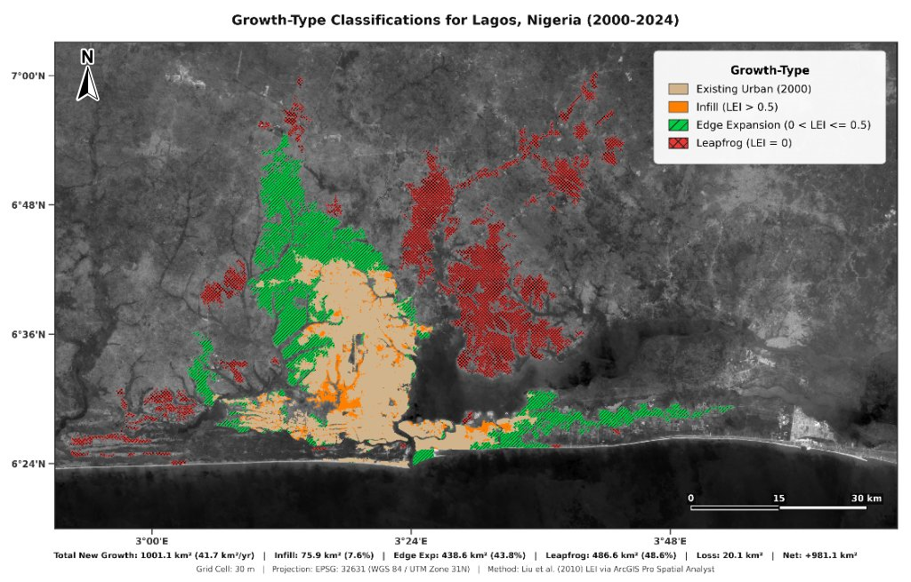
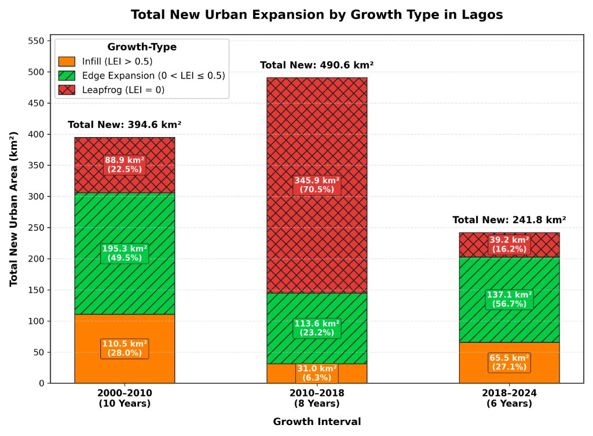

Lagos Growth Sprawl/Patterns Details:
Spring 2026
Problem
NGA wants to know the rates in which the major African cities are urbanizing and each of the growth types to be classified for each pixel of the area of Lagos.
My Role
I was assigned to produce data for three selected intervals: (2000-2010), (2010-2018), & (2018-2024) for Lagos as well as the total area in the last 24 years.
Data & Method
Using ArcGIS Pro and Landscape Expansion Index (LEI) (Liu et al., 2010), I was able to classify each growth type for each interval. The calculations were checked through csv calculations provided by the Urban Boundary & Imagery section of the project.
Here's the growth type map & bar chart below:
Lagos Growth Type Map from 2000 to 2024

Three Interval Bar Chart

What I Found
92.4% of total urban growth in Lagos is contributed by outward growth. The main sources providing this type of growth is through edge expansion making up 43.8% of growth and leapfrog development making up 48.6% of growth.
What I Would Do Differently
I would want to include other intervals to see the patterns of each growth type to see if certain intervals have different peaks and decline for each growth type.